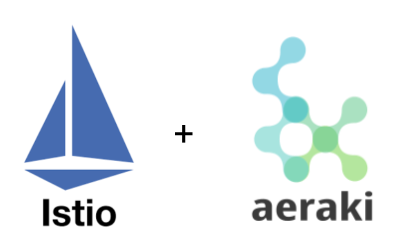

Introduction
Concepts & 概述
Istio Concepts & Istio概念
Install & 安装与命令相关
Injection & Istio注入
Istio CRD
VirtualService
DestinationRule
ServiceEntry
EnvoyFilter
pilot
Debug
Istio Code Analysis & Istio源码分析
Istio Ecology
Istio协议拓展增强插件——Aeraki
Aeraki Concepts & Aeraki概念
Aeraki Code Design & Aeraki设计
Aeraki Case Sample & Aeraki应用示例
Istio可视化工具——Kiali
Envoy Concepts & Envoy概念
Concepts
Envoy与istio的交互流程
XDS
Case Analysis & 案例分析
Simple Dubbo Mesh
Github & 仓库地址
Published with GitBook
Istio协议拓展增强插件——Aeraki

results matching "
"
No results matching "
"